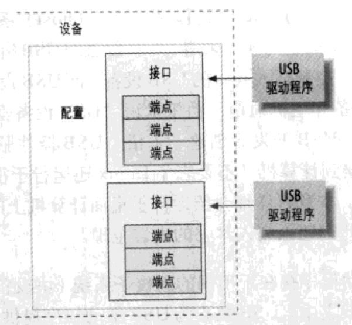

Intro
USB设备由配置、接口、端点组成。
- 接口可以理解为设备的功能，例如一个usb扬声器可能有声音传输的功能和按键的功能，因此有两个接口。
- 端点的传输模式主要有：等时、中断、批量、控制
- 等时传输（Isochronous Transfer）:
- 用途：主要用于实时数据传输，如音频和视频数据流。
- 特性：提供连续、定时的数据传输。不保证数据的完整性（即可能出现数据丢失，但不进行重传），保证数据的及时性。
- 适用场景：适用于对数据传输的实时性要求高，而对偶尔的数据错误可以容忍的应用，比如视频会议、电话会议。
- 控制传输（Control Transfer）:
- 用途：用于设备配置、命令传输和状态获取等控制目的。
- 特性：可靠的传输方式，确保数据的正确传递。每个USB设备至少有一个控制端点（端点0）。
- 适用场景：适用于USB设备的初始化、配置修改、状态查询等操作。
- 批量传输（Bulk Transfer）:
- 用途：用于传输大量数据，如文件传输。
- 特性：提供可靠的数据传输，自动进行错误检测和重传。传输速率可能会因为总线上的其他活动而波动。
- 适用场景：适用于对传输速度要求不是非常高，但要求数据完整性的场景，比如打印机、移动硬盘。
- 中断传输（Interrupt Transfer）:
- 用途：用于小量数据的实时传输，如键盘和鼠标输入。
- 特性：提供周期性的、小批量的数据传输，确保数据的及时传递和较高的可靠性。
- 适用场景：适用于对时效性要求较高的小数据量设备，如鼠标、键盘和游戏控制器。

USB urb
Linux内核中的USB代码通过一个成为urb的东西和所有USB设备进行通信。每个URB描述了一个USB事务的全部或部分。这个请求块用struct urb结构体来描述。USB设备驱动程序可能会为单个端点分配许多urb，也可能对许多不同的端点重用单个urb。设备中的每个端点都可以处理一个urb队列。一个urb的典型生命周期如下：
- 由USB设备驱动程序创建
- 分配给一个特定的USB设备的特定端点
- 由USB设备驱动程序递交给USB核心
- 由USB核心递交到特定设备的特定USB主控制器驱动程序
- 由USB主控制器驱动程序处理，它从设备进行UBS传送
- 当urb结束之后，USB主控制器驱动程序通知USB设备驱动程序。
主控制器驱动程序是内核已经写好了的，大多数情况下不需要自己编写。
struct urb
该结构体比较重要的字段有：
struct urb{ |
unsigned int pipe 包含urb所要发送的特定目标dev的端点信息。该字段必须使用内核定义好的函数来设置，用哪个函数取决于传输的方向。注意每个端点只能属于一种传输类型（等时，中断，批量，控制）。
unsigned int usb_sndctrlpipe(struct usb_device *dev, unsigned int endpoint); // 把端点设置为设置为控制OUT端点，用于从主机（如计算机）向设备发送控制信息和数据 |
urb结构体比较重要的字段还有：
struct urb |
其他重要字段详见《Linux设备驱动程序（第3版）》第332页。
1. 创建和销毁urb
struct urb结构体不能在驱动程序中或者另一个结构体中静态地创建，因为这样会破坏USB核心对urb所使用的引用计数机制。它必须使用usb_alloc_urb函数来创建。该函数原型如下:
struct urb *usb_alloc_urb(int iso_packets, int mem_flags); |
iso_packets是该urb应该包含的等时数据包的数量。如果不打算创建等时urb，该值应该设置为0。mem_flags 跟kmalloc的标志一样，详细内容查阅kmalloc的flags。
如果成功给urb分配的足够的内存空间，该函数就会返回一个指向该urb的指针。如果发生错误则返回NULL；
释放的话使用:
void usb_free_urb(struct urb *urb) |
里面的参数是想要释放的urb的指针。
2. 初始化urb
当一个urb被创建后，必须要正确的被初始化，并且该urb结构体里的pipe必须要使用对应的端点传输方式来设置。比如等时urb就要用usb_rcvisopipe等等…
中断urb
usb_fill_int_urb 是一个辅助函数，用来正确的初始化即将被发送到USB设备的中断端点的urb：
usb_fill_int_urb(struct urb *urb, struct usb_device *dev, unsigned int pipe, void *transfer_buffer, int buffer_length, usb_complete_t complete_fn, void *context, int interval) |
struct urb *urb
指向需初始化的 urb 的指针。struct usb device *dev
该urb所发送的目标USB设备。unsigned int pipe
该urb所发送的目标USB设备的特定端点。该值是使用前述usb_sndintpipe或usb_rcvintpipe函数来创建的。void *transfer_buffer
用于保存外发数据或者接收数据的缓冲区的指针。注意它不能是一个静态的缓冲区，必须使用kmalloc调用来创建。buffer_length
transfer_buffer指针所指向的缓冲区的大小。usb complete_t complete
指向当该urb结束之后调用的结束处理例程的指针。void *context
指向一个小数据块，该块被添加到urb结构体中以便进行结束处理例程后面的查找。int interval
该urb应该被调度的间隔。有关该值的正确单位，请参考前面对struct urb结构体的描述。
批量urb
批量urb的初始化和中断urb很相似。所使用的函数的usb_fill_bulk_urb:
usb_fill_bulk_urb(struct urb *urb, struct usb_device *dev, unsigned int pipe, void *transfer_buffer, int buffer_length, usb_complete_t complete_fn, void *context) |
该函数的参数与中断urb的初始化函数完全一样。不过，没有时间间隔参数，因为批量urb没有时间间隔值。注意，pipe变量必须使用usb_sndbulkpipe或usb_rcvbulkpipe函数来初始化。
控制urb
控制urb的初始化方法和批量urb几乎一样，调用usb_fill_control_urb函数：
usb_fill_control_urb(struct urb *urb, struct usb_device *dev, unsigned int pipe, unsigned char *setup_packet, void *transfer_buffer, int buffer_length, usb_complete_t complete_fn, void *context) |
参数和批量urb的完全一样，除了一个新的参数，unsigned char *setup_packet，它指向即将被发送到端点的设置数据包的数据。注意，pipe必须用usb_sndctrlpipe或usb_rcvctrlpipe函数来初始化。
等时urb
等时urb没有初始化函数，必须手动进行初始化，如下：
urb->dev = sheldon_uvc_udev; |
3. 提交urb
urb被创建并初始化之后，就可以提交到USB核心以发送给USB设备了。提交urb是通过下面的函数来完成的：
int usb_submit_urb(struct urb *urb, gfp_t mem_flags); |
当一个urb被成功地提交到USB核心之后，在接受函数（即回调函数，complete）被调用之前不能访问该urb结构体中的任何字段。
因为usb_submit_urb函数可以在任何时刻调用（包括从一个中断上下文中），所以mem_flags变量的内容必须是正确的，mem_flags可以被设置为三个值，具体取决与usb_submit_urb何时被调用，这里不细说，详细见《Linux设备驱动程序（第3版）》第341页。
4. 结束urb
其实就是complete回调函数，一旦urb处理完成（无论成功与否），就会调用该回调函数
5. 取消urb
应该调用usb_kill_urb或usb_unlink_urb函数来终止一个已经被提交到USB核心的urb
int usb_kill_urb(struct urb *urb); |
如果调用usb_kill_urb函数，该urb的生命周期将被终止。通常是当设备从系统中被断开时，在断开回调函数中调用该函数。
对于某些驱动程序而言，应该使用usb_unlink_urb函数来告诉USB核心终止一个urb。该函数并不等到urb完全被终止之后才返回到调用函数。这对于在中断处理例程中或者持有一个自旋锁时终止一个urb是很有用的，因为等待一个urb完全被终止需要USB核心具有使调用进程睡眠的能力。
总结：总体流程
所以使用urb的流程大致如下，以批量传输为例子：
struct urb *my_urb = usb_alloc_urb(0, GFP_KERNEL); // 分配URB，非ISO传输 |